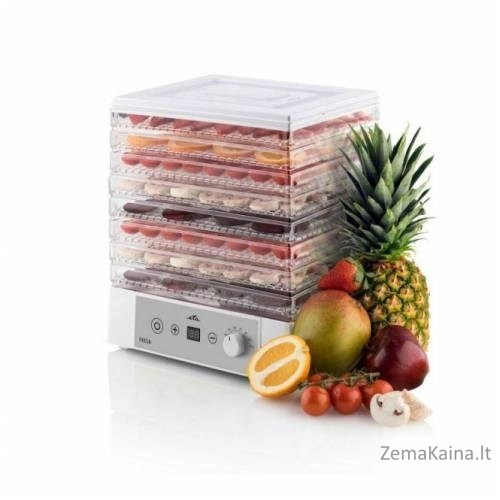

Maisto šildytuvai
- Maisto šildytuvai | duodu.lt
Maisto šildytuvai. Chicco elektrinis buteliuko šildytuvas. 50.00€ su PVM BABY ONO elektrinis maisto šildytuvas 2 in 1. 44.00€ su PVM Philips maitinimo centras 3 in 1. 171.22€ su PVM 214.03€ su PVM. Philips Avent Natural buteliukų šildytuvas. 52.00€ su PVM ... - Maisto šildytuvai | vidaXL.lt
Įvairaus tipo, dydžio ir formų maisto šildytuvai skirti namams. Platus maisto šildytuvų asortimentas, greitas pristatymas bei geriausios kainos garantija! - Maisto šildytuvai
Maisto šildytuvai ir sterilizatoriai vaikams pirkti ŠIANDIEN PIGIAU internetu. AKCIJINIAI pasiūlymai. Didelis pasirinkinmas. Yra NEMOKAMAS pristatymas - Maisto šildytuvai - Marmitai - RESTORANU IRANGA
Maisto šildytuvas Classic 2 deg. € 27.86 – € 30.56 Su PVM Produkto kodas: 477102 Kategorijos: Akcijos , Gamintojai , Brabantia , Maisto šildytuvai , Stalo priedai , Virtuvės įrankiai ir aksesuarai , Virtuvės reikmenys - MAISTO ŠILDYTUVAI IR STERILIZATORIAI vaikams ...
Pradžia / Gastro / HoReCa reikmenys / Gastro / Profesionali virtuvės įranga / Maisto pateikimo / Banketų, furšetų įranga / Šildomi padėklai / Šildytuvai puodeliams, lėkštėms Gastro / HoReCa reikmenys - Maisto šildytuvai | Mandarinai.lt- daugiau nei 35 ...
Pradžia / SMULKIOJI BUITINĖ TECHNIKA / Maisto šildytuvai. Nuolaida! Išparduota. Indas maisto šildymui “EDEL HOFF” Eh-8524. 35.00 ... - Maisto šildytuvai - Vaikutis
Maisto šildytuvai: dešrainių šildytuvai, šokolado fontanai, elektriniai sriubos puodai +37060997657 info@mandarinai.lt Kontaktai. Mano paskyra. 0 €0.00. Jūsų pirkinių krepšelis yra tuščias! Navigacija. NAMAMS . Namų Apyvokos Reikmenys ... - Maisto šildytuvai - Puiki.lt
Maisto šildytuvai Pakabukai Staliukai Ventiliatoriai, aušintuvai Kvapų skleidėjai Lietuviški žaidimai Vaiko kambarys Sapnų gaudyklės Dėlionės Galvosūkiai Radio modeliai Žaidimai Robotai Dronai Elektroniniai žaislai Elektroniniai konstruktoriai Surenkami konstruktoriai Nuotolinio valdymo žaislai Dantų šepetėliai - Maisto šildytuvai, termosai - UAB "Jumstata"
Maisto šildytuvai Stalo serviravimas Padėklai, tortinės Žvakidės Onikso gaminiai Staltiesės Taurės Metalas, stiklas Krištolas Stiklinės, ąsočiai KRIŠTOLAS Mediniai dirbiniai Padėklai Lentelės Mentelės, šaukštai Dirbtinės gėlės Vienetinės gėlės Gėlių kompozicijos Medeliai - Maisto šildytuvas - Guomeda
› Maisto šildytuvai-10% sporto prekėms* > Namams ir Sodui (24) Virtuvė ir Valgomasis (24) Virtuvės Reikmenys (24) Maisto šildytuvai (24) Šildomi indai (12) Maisto šildytuvai vidaXL 2 dalių marmitų komplektas, nerūdijantis plienas ...
Registruotis Prisijungti Pageidavimai (0) Mano paskyra Prekių krepšelis Atsiskaitymas Setting Menu Pageidavimai (0) Mano paskyra Prekių krepšelis Atsiskaitymas
+370 635 33816
Konsultacijos ir pagalba telefonu
Grąžinimas
100% grąžinimo garantija
Atsiskaitymas
Saugaus atsiskaitymo garantas
Prekių krepšelis
0 prekė(s) - 0.00€ Jūsų prekių krepšelis tuščias Toggle navigation Pradžia Akcijos Dovanų kuponai Straipsniai Kontaktai Pagrindinis Maisto šildytuvai Kategorijos Meškerės Visų tipų meškerės ir spiningai profesionalams ir žvejams mėgėjams Žvejybai iš laivo Jigo spiningai Spiningai Fyderiai Pikeriai Karpinės meškerės Jūriniai spiningai Muselinės meškerės Spiningai velkiavimui Surf meškerės Pole meškerės Match tipo meškerės Bolognes meškerės Ritės Įvairių gamintojų žvejybinės rites ir multiplikatoriai Apranga, avalynė Rūbai,avalynė ir aksesuarai žvejybai, medžioklei bei laisvalaikiui gamtoje Kostiumai Žieminiai kostiumai Neskęstantys kostiumai Demisezoniniai kostiumai Kostiumai nuo vabzdžių Jogeriai Striukės Bridkelnės Kelnės Liemenės Gelbėjimosi liemenės Avalynė Batai Įdėklai batams Vidpadžiai Braidymo batai Šlepetės Batų raišteliai Priemonės nuo praslydimo Sandalai Bliuzonai Marškinėliai Apatiniai rūbai Apatinės kelnės Vyriški apatiniai Maudymosi glaudės Maudymosi kostiumėliai Šilti apatiniai Aksesuarai Kojinės Akiniai Kepurės Kepurėlės su snapeliu Sportiškos kepurės Pirštinės Balaklavos Apyrankės, galvajuostės Šalikai, movos Apsauginiai getrai Lietaus drabužiai Kombinezonai Antkeliai Polo marškinėliai Žvejybinės liemenės Šortai Plaukiojimui Pripučiamos valtys, varikliai, akumuliatoriai ir kiti reikmenys žvejybai ar poilsiui ant vandens Pripučiamos valtys Elektriniai varikliai Benzininiai varikliai Priedai valtims ir varikliams Pompos valtims Inkarai Uždangalai - tentai Klijavimo priemonės Laikikliai ir kita Irklai Gelbėjimo ir kitos priemonės Priekabos Dujiniai varikliai Irklentės Žvejybinės baidarės Elektronika ir optika Echolotai, radijo stotelės, navigacija, žiūronai ir kita optikos įranga Akumuliatoriai Echolotai, GPS įranga Radijo stotelės Žibintuvėliai ir šviestuvai Vaizdo kameros Žiūronai Kolimatoriai Monokoliai Jūriniai žiūronai Žiūronai medžioklei Žiūronų priedai Paukščių stebėjimui Žiūronai laisvalaikiui Apžvalgos žiūronai Astronominiai žiūronai Akumuliatorių įkrovikliai Kompasai Automobiliniai šaldytuvai Didinamieji stiklai Baterijos Megafonai Metalo detektoriai Laikrodžiai Reikmenys Įrankiai ir priemonės žvejybai, krepšiai, graibštai ir kiti smulkūs reikmenys Krepšiai Kuprinės Dėžės, dėklai, krepšiai Žvejybinės dėžės Dėklai - krepšiai masalams Dėklai meškerėms Dėklai akiniams Neperšlampantys dėklai Dėžutės masalams Dėklai įrangai Dėklai plūdėms Dėklai avižėlėms Dėklai pavadėliams Žvejybinės kuprinės Žvejybiniai krepšiai Graibštai ir tinkleliai Stovai ir laikikliai meškerėms Laikikliai įrangai Karpinei/dugninei zvejybai Signalizatoriai Skambučiai, švieselės Staleliai Valai Paprasti (mono) valai Fluorokarbono valai Pinti valai Pavadėliai Karpiniai valai Jūriniai valai Žieminiai valai Muselinis valas Nailono valai Svareliai, galvakabliai Svarelių rinkiniai Svareliai Karpiniai svareliai Galvakabliai Svareliai Čeburaškos Smulkmenos žvejybai Žiedeliai meškerėms Galūnės meškerėms Plūdės Kabliukai Ofsetiniai Trišakiai Kabliukai su užkarpėlėmis Karpiniai kabliukai Universalūs kabliukai Kabliukai masalams Segtukai, suktukai Stabdžiai plūdėms Gumos Švieselės Stoperiai Kaprono virvės Kembrikai Kabliai Pavadėliai Priedai Apsaugos meškerėms Tepalas Aksesuarai Žvejybiniai Įrankiai Žvejybinės replės Žnyplės, ekstraktoriai Žirklės, kandikliai Žiodikliai Valo surišėjai Svarstyklės Dirbtiniai masalai Vobleriai, riperiai, sukriukės, guminukai, pilkeriai, avižėlės ir kiti dirbtiniai masalai Spiningo masalai Blizgės Guminukai Sukriukės Vobleriai Pilkeriai Sistemėlės Jūrinės sistemėlės Karpinės sistemėlės Jūrinės gumos Hibridiniai masalai Jaukai žuvims Kvapai, pašarai, boiliai bei jaukinimo reikmenys, šeryklėlės, laidynės ir kita Reikmenys jaukinimui Šėryklos Dėklai jaukams Laidynės Kibirai Indai jaukams Priedai Sieteliai Staliukai Vamzdeliai šėryklėlėms Kvapai Klijai jaukui Boiliai Emulsija boiliams Granuliuoti jaukai Birūs jaukai Miniboiliai Stovyklavimui Palapinės, miegmaišiai, kėdės ir kita įranga stovyklavimui, poilsiui gamtoje Poilsiui ir miegui Palapinės Miegmaišiai Čiužiniai Pompos čiužiniams Pavėsinės, skėčiai Turistiniai kilimėliai Pagalvėlės Pikniko kilimėliai Priedai palapinėms Krepšiai, kuprinės Šaltkrepšiai Turistinės kuprinės Neperšlampantys krepšiai Paplūdimio krepšiai Lagaminai Sportinės kuprinės Kelioniniai krepšiai Mini krepšiai Įvairūs dėklai Sportiški krepšiai Juosmens krepšiai Lauko baldai Kėdės Sulankstomos lovos Stalai Sulankstomos kėdės Komplektai Gultai, šezlongai Maisto ruošimui Dujų balionėliai Rukyklos Puodai Turistinės viryklės Maisto šildytuvai Indai išvykoms Gertuvės Dėžutės maistui Termo puodeliai Termosai Keptuvės Talpos vandeniui Lėkštės, dubenėliai Stalo įrankiai Įrankiai Peiliai Kombinuoti įrankiai Biotualetai Įvairios prekės Žaislai ir suvenyrai Dekoratyvinės pagalvėlės Transporto priemonės Elektriniai paspirtukai Elektrinės riedlentės Riedžiai Plaukimui ir nardymui Plaukimo akiniai Nardymo kaukės, vamzdeliai Plaukmenys Žiemos sezono įrankiai Žieminės meškerės, ledo grąžtai, rogės, dėžės ir žieminiai masalai Žieminės meškerės Rogės Žieminės palapinės Komplektai Ledo grąžtai Žieminiai masalai Avižėlės Žieminės blizgutės Trišakiai blizgutėms Dirbtiniai masalai Kita Žieminės dėžės Įrankiai _Atsarga Laivų ir valčių įranga Siurbliai, Tualetai, Elektronika, Alyvos, Atsarginės dalys, laivų priežiūrai.. Ventiliatoriai Flanšinio montavimo Lankstus montavimas Vidiniai ventiliatoriai Šildytuvai ir atitirpikliai Priedai šildytuvams Komercinių valčių atitirpikliai Pramoginių valčių atitirpikliai Vandens šildytuvai Atsarginės dalys Priedai šildytuvams SS šildytuvai Aukščiausios kokybės šildytuvai Aukščiausios kokybės elektriniai šildytuvai Jūriniai tualetai Atsarginės dalys tualetams Priedai tualetams Elektriniai Premium Elektriniai tylūs Standartiniai elektriniai Rankinio valdymo Siurbliai ir pompos Savaiminio užpildymo FIP siurbliai Atsarginės dalys Priedai Sankabos Pjedestalo elektromagnetiniai siurbliai Variklio aušinimo siurbliai Bendrosios Paskirties Siurbliai Priedai Tepalo keitimo siurbliai Krumpliniai siurbliai Balasto siurbliai DS siurbliai su sparnuotėmis Vandens slėgio sistemos Priedai WD500-Premium serija WPS500-Premium serija WD300 serijos siurbliai WPS300 serijos siurbliai Atsarginės dalys Triumo siurbimo sistemos Aeratoriai Priedai Rankiniai siurbliai Panardinami sunkieji Panardinama automatika Kontrolės sistemos Tūriniai siurbliai Panardinami siurbliai Keičiamos sparnuotės Įrankiai sparnuotėms Pramoginių laivų sparnuotės Komercinių laivų sparnuotės Specialios sparnuotės Nuotekų sistemos Nuotekų siurbliai Pilni rinkiniai PriedaiMaisto šildytuvai
Barocook terminė viryklė 850 ml
7.13€Barocook terminė viryklė skirta maisto gaminimui be ugnies. Paprasta ir lengva naudotis bet kokiu oru. Produktas yra ekologiškas. SAVYBĖS: .....
Į krepšelį Pageidauti PalygintiBaropack paketas 50g
1.60€Baropack paketas 50g Baropack paketas skirtas šildyti maistą su Barocook. 50g paketėlis yra vienkartinio naudojimo konteineriuose 850ml ir 1000 m.....
Į krepšelį Pageidauti Palyginti Rodoma nuo 1 iki 2 iš 2 (1 puslapių)Informacija Kontaktai ir rekvizitai Pristatymo informacija Prekių pirkimo taisyklės Privatumo nuostatos Atsiliepimai klientų Priedai Prekių ženklai Dovanų kuponai Akcijos Mano paskyra Mano paskyra Užsakymų istorija Pageidavimų sąrašas Naujienų prenumerata Klientų aptarnavimas Susisiekite su mumis Grąžinimo forma Svetainės žemėlapis Mus rasite: Elektroninių parduotuvių kūrimas Svetainių kūrimas MODEO
zvejyba.eu © 2020. Kategorijos Elektronika ir optika Laivų ir valčių įranga Meškerės Ritės Dirbtiniai masalai Reikmenys Jaukai žuvims Apranga, avalynė Stovyklavimui Plaukiojimui Žiemos sezono įrankiai



Mauris vulputate dolor
Rutrum fermentum nibh in augue praesent urna congue rutrum.
Etiam posuere